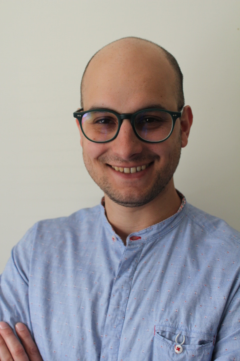

Contact:
alessio.xompero @ gmail.com
Alessio is an independent AI/ML researcher with 10+ years of contributions in computer vision and deep learning methods
for visual privacy, decentralized collaborative spatial intelligence, and multimodal perception applied to robotics.
Alessio worked as a research contractor at the Advanced AI Lab of Samsung Research UK from October 2025 until December 2025.
Previously, he was a PostDoc with the School of Electronic Engineering and Computer Science at Queen Mary University of London (QMUL), UK, from April 2020 until October 2025.
He obtained the Ph.D. in Electronic Engineering with a research focus on Computer Vision from Queen Mary University of London, UK, in September 2020.
He obtained the Master Degree in Telecommunications Engineering and the Bachelor Degree in Electronics and Telecommunication Engineering from the University of Trento in March 2015 and February 2012, respectively.
Research interests
Artificial Intelligence: Computer Vision | Machine Learning & Deep Learning | Multimodal AI
Perception for Embodied AI: Multimodal Sensing | Human-Robot Interaction | Decentralized Spatial Intelligence
Responsible AI: AI Safety | Visual Privacy | Explainable AI | Adversarial ML
Open Science: Benchmarking | Reproducibility